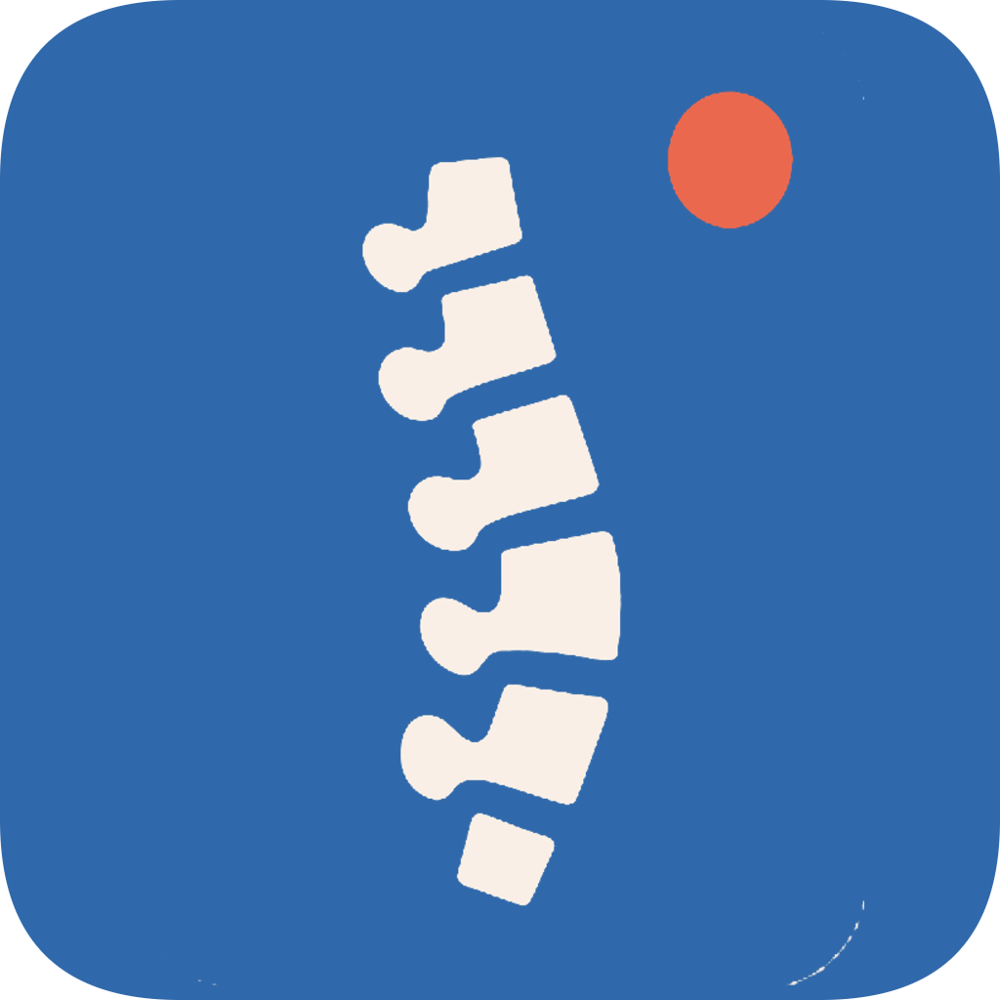
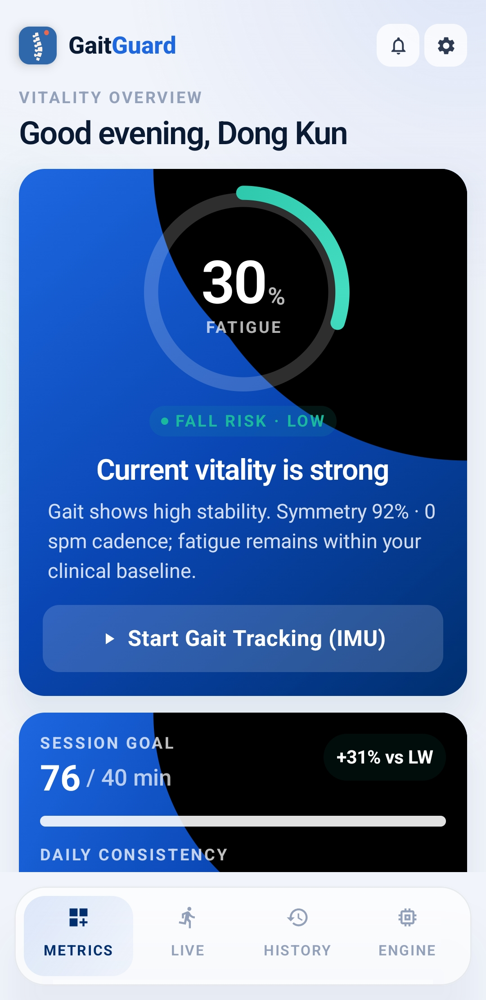
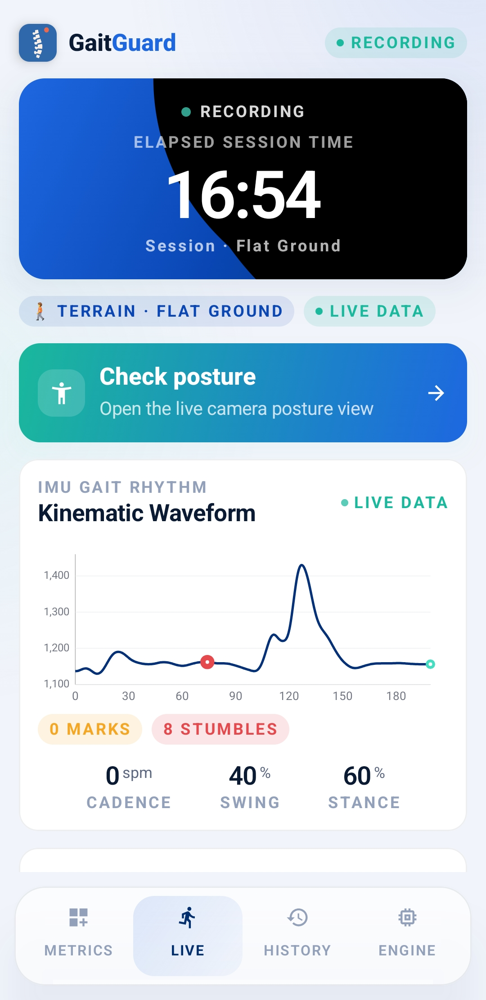
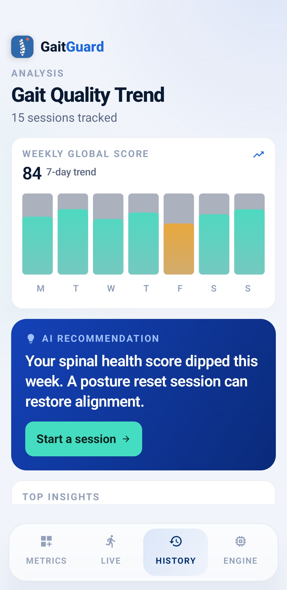
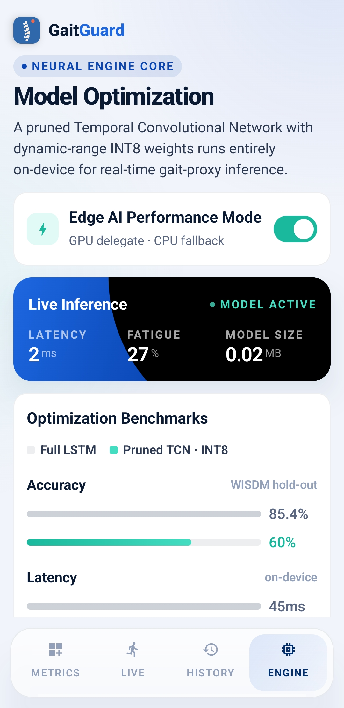

GaitGuard
Real-time gait, posture & fatigue monitoring —
no wearable, no cloud, no internet.
Goal & Usage Scenario
Fatigue and poor posture go undetected until injury occurs.
Clinical gait labs are expensive and immobile; wearables add cost and friction. No affordable, always-on, on-device option exists.
GaitGuard turns the phone you already carry into a continuous gait & posture monitor.
It reads the built-in IMU sensors and camera to track movement in real time — fully on-device, no internet or wearable required.
Key Idea — two independent sensing modes
Accelerometer + gyroscope sampled at 50 Hz from the phone in your pocket.
ML Kit pose detection over the front / rear camera, fully local with an AR skeleton overlay.
App functionality — a five-tab experience





Gait monitoring // Mode A
- 400-slot ring buffer windows raw IMU in real time (≈ 4 s @ 50 Hz).
- 12 hand-crafted gait features
cadence · ISI CV% · harmonic ratio · trunk tilt · arm swing · dom. freq. - Dual-input TCN blends the raw window with features into a composite fatigue score.
- Terrain classifier — flat · stairs · incline · uneven.
- Fall-detection FSM + micro-stumble detection, always on — emergency SMS to a caregiver on a confirmed fall.
Posture analysis // Mode B
- CameraX + ML Kit pose detection — 33 BlazePose landmarks tracked live, fully on-device.
- AR skeleton overlay with color-coded landmark confidence and a horizon reference line.
- Real-time Spinal Health Report — shoulder, kyphosis & axial angles into a 0–100 score.
- AI-generated insights + every PostureSnapshot persisted to a local Room database.

Before / after model optimization
| Metric | Full LSTM (baseline) | TCN (unoptimized) | Pruned TCN | Pruned TCN · INT8 ★ |
|---|---|---|---|---|
| Accuracy (WISDM hold-out) | 85.4% | 60.0% | 60.0% | 60.0% |
| Model size | 0.14 MB | 0.04 MB | 0.04 MB | 0.02 MB |
| Latency (per inference) | 45 ms | 30 ms | 18 ms | < 20 ms |
| Size reduction (vs LSTM) | — | 71% | 71% | 86% |
Live demo — full app walk-through
Fatigue ring, fall risk & session goals
IMU kinematic waveform while recording
7-day trend & AI recommendation
Live inference, model size & benchmarks
Live demo — posture & live camera
The live camera streams the front view, fits the 33-point skeleton in real time, and locks a pose to compute a Spinal Health Report — all without leaving the device. The values shown are an example reading from one session.
Project timeline & contribution
App architecture, IMU sensor pipeline & Room database.
Compose UI, ML Kit posture & TCN model training.
Design polish, photo analysis & LLM posture insights.
Pruning + INT8, benchmark & final submission.
moondongkun/
gaitguard-mobile